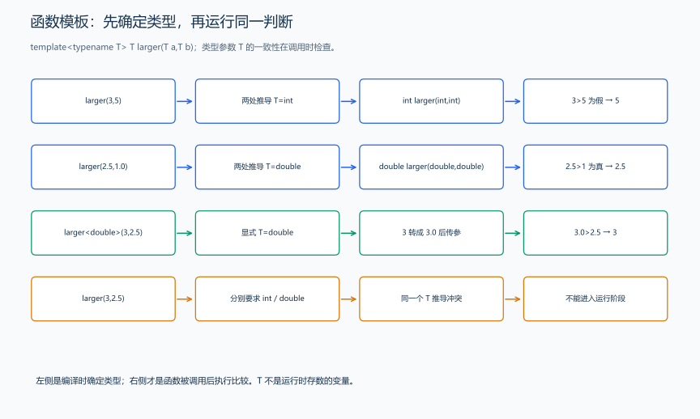
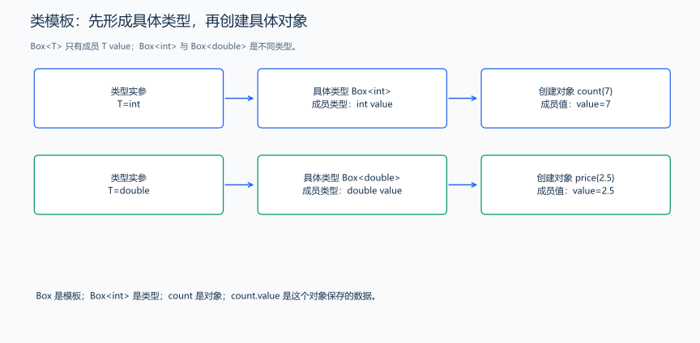
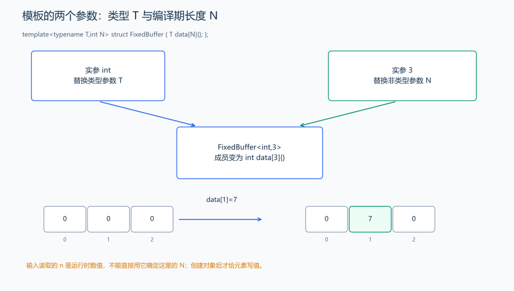

（十四） 模板入门：从相同操作到类型参数 T
1. 相同计算在不同类型上的复用
两整数取较大值与两小数取较大值，判断过程都是 a>b ? a:b。分别写 int 版和 double 版会重复同一段逻辑；现在希望保留逻辑，把参与计算的类型作为参数。
题目原文（自拟）： 程序无需输入。用同一个取较大值的函数模板，依次计算 (3,5)、(2.5,1.0)，以及显式按 double 处理的 (3,2.5)，各输出一行。
#include <iostream>
using namespace std;
template <typename T> T larger(T a, T b) {
return a > b ? a : b; // 比较两个 T 类型的值，返回较大的一项。
}
int main() {
cout << larger(3, 5) << '\n'; // 两实参都是 int，推导 T=int，得到 5。
cout << larger(2.5, 1.0) << '\n'; // 两实参都是 double，推导 T=double。
cout << larger<double>(3, 2.5) << '\n'; // 明确 T=double，3 转成 3.0 后比较。
}输出：
5
2.5
3
沿第一行读：template 声明模板，typename T 声明一个类型参数；接着 T larger(T a,T b) 表示返回类型与两个参数类型都使用这个 T。T 不是一个存数字的变量，也不是固定的内置类型，只是这里选用的参数名，换成 Type 或 ValueType 也可以。普通竞赛模板里的 int T 是组数变量，与这里的类型参数角色不同。
2. 推导、显式指定与实例化
| 调用 | 怎样确定类型 | 按具体类型理解 |
|---|---|---|
larger(3,5) |
两个参数都推导为 int | int larger(int,int) |
larger(2.5,1.0) |
两个参数都推导为 double | double larger(double,double) |
larger<double>(3,2.5) |
调用者直接指定 double | 两个值先作为 double 参数传入 |
larger(3,2.5) |
两个位置分别要求 int 与 double | 这个模板的同一个 T 推导冲突，不能这样调用 |
编译器依据模板和确定的参数形成所需的具体函数，这个过程称为实例化。它发生在编译相关的阶段，不是在每次运行时把类型换一遍。模板内部支持哪些操作，要看代入后的类型；若类型没有 >，本函数也无法用于它。
template<class T> 与 template<typename T> 都声明类型参数，int、double 或我们定义的类都可以代入 T。函数模板、推导和实例化规则见 C++17 草案：模板参数与调用时的参数推导。
3. 先做一条记录，再把记录里的类型参数化
假设要把一个值装进名为 Box 的记录，整数盒子与小数盒子的区别只有 value 的类型。先认识最小的 struct：它定义一种自定义类型，花括号内声明成员；创建对象后用 对象.成员 访问，成员默认可以公开访问。
struct IntBox {
int value; // 每个 IntBox 对象各自保存一个整数。
};
// 在函数中写 IntBox box{7}; 后，box.value 就是 7。现在把 int 换成 T，仍然只保存一个值：
#include <iostream>
using namespace std;
template <typename T> struct Box {
T value; // 代入什么类型，这个成员就保存什么类型的值。
T read() const {
return value;
} // 成员函数；末尾 const 表示只读该对象。
};
int main() {
Box<int> count{7}; // value 的类型为 int。
Box<double> price{2.5}; // value 的类型为 double，是另一种具体类型。
cout << count.value << ' ' << price.read() << '\n'; // 点号访问数据或调用成员函数。
}输出 7 2.5。Box<int> 是一个具体类型，Box<int> count 才是在创建该类型的对象；Box 本身是模板名称。Box<int> 与 Box<double> 是不同类型，不能理解为一个对象在运行时改变类型。

struct 内的函数通过对象调用；例如 price.read() 读取 price 的 value。这样，一条记录既能保存数据，也能提供操作这些数据的函数。面向对象部分会继续用它讲访问控制、构造和继承。
4. 尖括号里也可能放一个编译期数值
如果还想让记录保存固定长度的原生数组，就需要两个参数：元素类型 T，以及长度 N。N 表示值，不是另一种类型。
#include <iostream>
using namespace std;
template <typename T, int N> struct FixedBuffer {
T data[N]{}; // 本例要求 N>0；用编译期长度创建原生数组。
};
int main() {
FixedBuffer<int, 3> values; // T=int，N=3，三个整数先初始化为 0。
values.data[1] = 7;
for (int i = 0; i < 3; ++i) {
if (i > 0)
cout << ' ';
cout << values.data[i]; // 仍使用已学的成员访问和数组下标。
}
cout << '\n';
}输出 0 7 0。这里的 3 是非类型模板实参，参与确定具体类型；输入读取的普通变量 n 不满足这个编译期长度要求。类型参数通常写 T、Key、Value，数值参数常写 N；判断它们的角色，应看声明，不应只凭字母大小写。

多个类型参数可以分别指定类型，例如 template<typename A,typename B> 中的 A、B 可以取不同类型。模板参数也可提供默认值：把 Box 声明为 template<typename T=int> 后，Box<> 就使用 int；写 Box<double> 则使用明确给出的 double。
5. 标准库的类型工具也按同一方式阅读
想知道当前平台 int 能保存的范围，可以使用 <limits> 的 numeric_limits<int>。numeric_limits 是类模板，int 是类型实参；::min()、::max() 是属于这个具体类型的查询函数，不必创建一个对象。
#include <iostream>
#include <limits>
using namespace std;
int main() {
cout << numeric_limits<int>::min() << '\n'; // 当前平台 int 的最小值。
cout << numeric_limits<int>::max() << '\n'; // 当前平台 int 的最大值。
cout << numeric_limits<long long>::max() << '\n'; // 换实参，查另一种类型。
}结果取决于实现。普通整数的 min 是最小值；浮点类型的 min 通常表示最小正正规值，若要其最低有限值应使用 lowest。模板定义通常放在头文件中，使调用或创建具体类型的源文件能看见完整定义。
6. 两个类型参数：同一条记录保存不同类型的字段
函数重载中，两份 larger 重复了判断逻辑；模板把变化的类型参数化。类模板同样可以让记录的多个字段分别选择类型，不必要求所有字段共用 T。
题目原文（自拟演示）： 建立一条“编号、等级”记录，编号类型 int、等级类型 char，保存 7 与 A，输出两个字段。
#include <iostream>
using namespace std;
template <typename Key, typename Value> struct Record {
Key key; // 第一个类型实参决定编号字段的类型。
Value value; // 第二个类型实参独立决定等级字段的类型。
};
int main() {
Record<int, char> student{7, 'A'}; // 参数是类型，花括号里的才是对象的实际值。
cout << student.key << ' ' << student.value << '\n'; // 输出 7 A。
}把声明、类型与对象分开读：Record 是模板名称，Record<int,char> 是具体类型，student 是该类型的对象。若改成 Record<int,double>，第二字段就换成 double；不是让已经创建的 student 在运行中随意换类型。
typename T 与这里的 class T 都声明类型参数；int N 则声明值参数。实例化要满足模板体中的操作要求，typename 不会自动让任意类型都能使用加法、比较或数组初始化。下一节的 vector
到这里，已经能区分模板名称、类型实参、具体类型和对象，也能用两个参数分别指定字段类型。接下来面对运行时长度的序列、查找与排序等任务，用这套读法理解 STL，继续从用途推进。